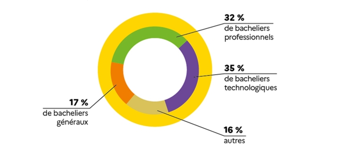

Condition d'admission
Les BTS se préparent en 2 ans après le bac, soit dans des lycées publics, ou des lycées agricoles pour les BTS agricoles, soit au sein d’écoles privées, payantes en général. Dans les 2 cas, l’établissement sélectionne les candidats sur dossier avec le bac (ou un niveau bac), en cohérence avec la spécialité choisie. Les candidatures en BTS sont gérées par la plateforme nationale de préinscription en 1re année de l’enseignement supérieur Parcoursup. Si vous souhaitez suivre un BTS par apprentissage, il est conseillé de formuler aussi une demande avec le statut scolaire car l'inscription n'est effective qu'une fois le contrat signé avec un employeur. Sinon vous pourriez vous retrouver sans établissement d'accueil à la rentrée. Le dossier de candidature se compose des bulletins scolaires. À noter : les BTS Support à l'action managériale, commerce international et management en hôtellerie restauration exigent la pratique de 2 langues vivantes. La sélection est plus importante dans les spécialités rares ou très attractives. D'où le recours par certains établissements à des tests de niveau et/ou à un entretien de motivation.
Priorié au bac professionnel et technologique
Les dossiers des bacheliers professionnels et technologiques sont examinés en priorité. Dans chaque académie, un quota de places est désormais réservé aux bacheliers professionnels pour les spécialités cohérentes avec leur bac. Les bacheliers professionnels et technologiques qui ont obtenu leur bac avec la mention "bien" ou "très bien" sont admis de droit dans les BTS du même domaine.
